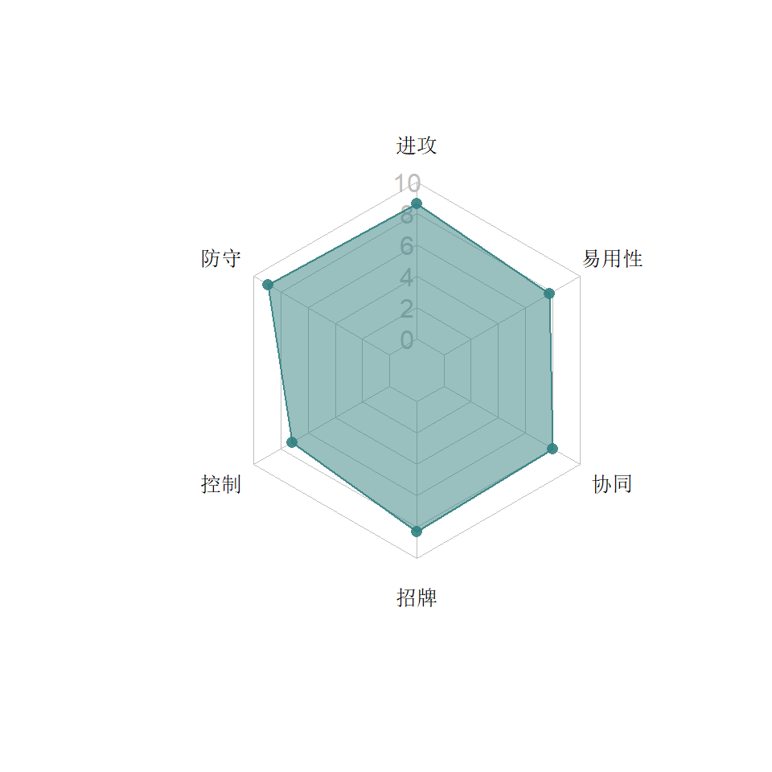
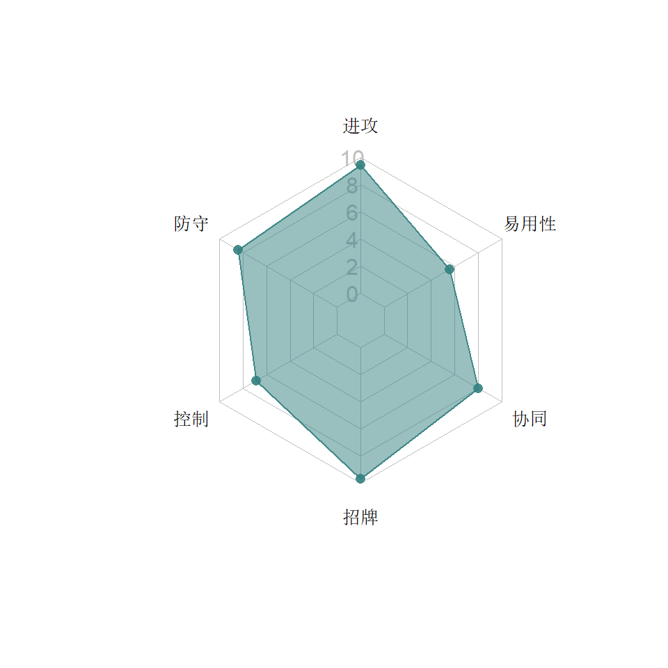
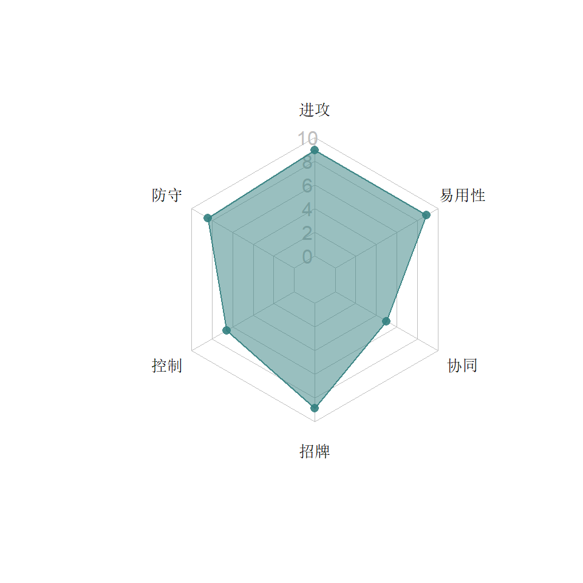
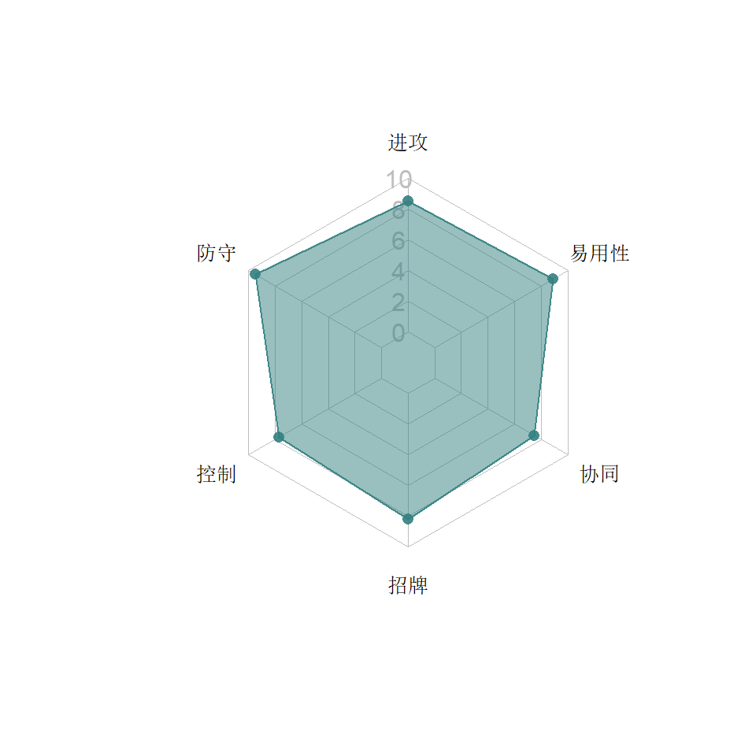
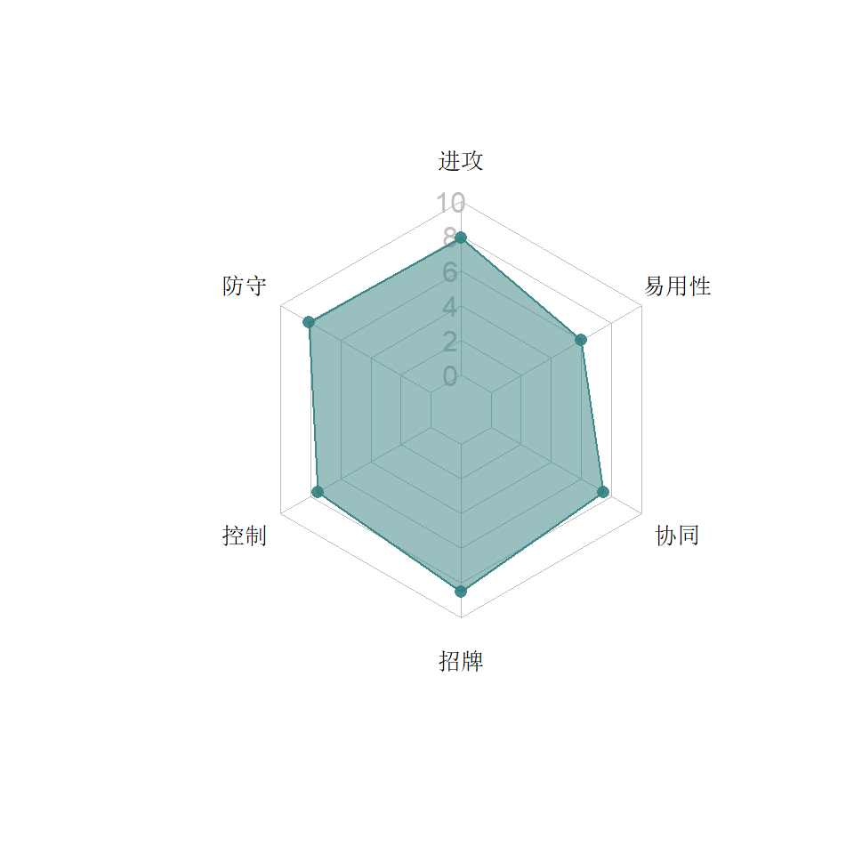
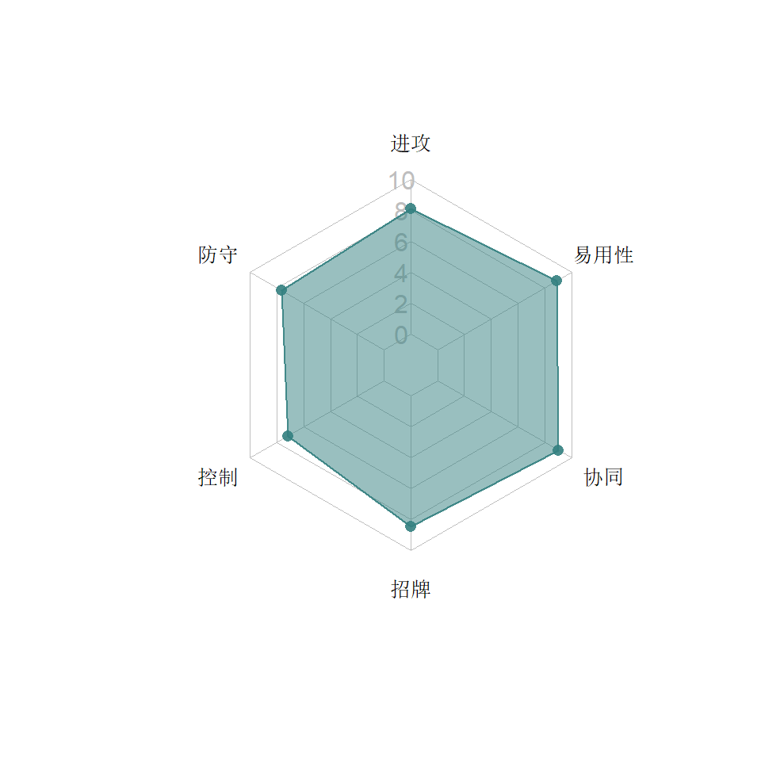
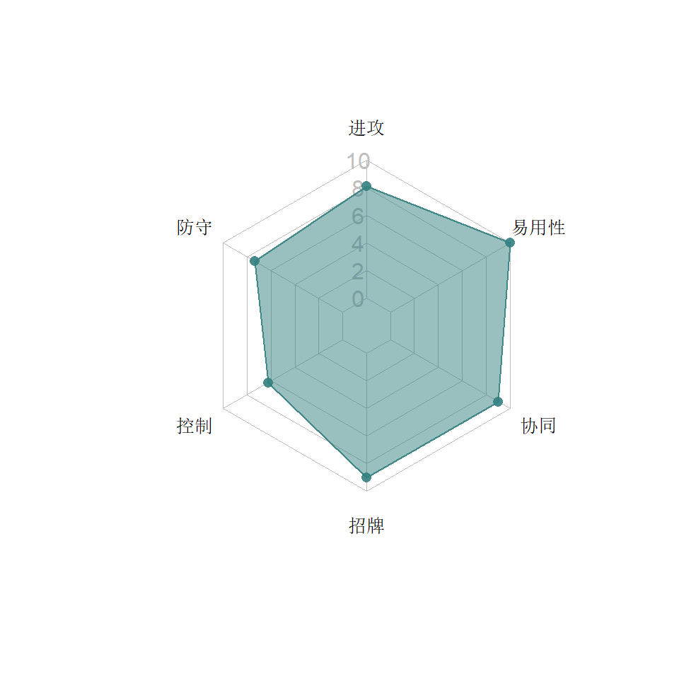

5  战士系
战士系
战士系机器人刀锋凛凛，以流血能力和克规避能力为主要特色。不过探长的存在也让战士系整体实力偏低。
类别关键字：流血，暴击，克规避
5.1 碎骨魔


5.1.1 特点分析
游戏中被动反伤第一人，早期基地防守第一人。早期重击命中高的时候也是玩家手里的红人。之后慢慢被其他战士夺去了风头。
5.2 雷震


5.2.1 特点分析
雷震是最早一批的战士系机器人，据说在内测版中强到逆天，公测后削弱了。战士中少有的远程型，带护甲的玩法也让他在战士中显得不那么脆（直到巨蝎的出现）
5.2.1.1 能力
- 近战暴击有25%概率流血（5秒，78~120%的攻），相比漂移和风刃，概率低很多，但是时间和强度高很多。
- 重击和S2有概率晕，吃暴击时概率得到护甲，可以通过重击来刷新护甲时间，但与钢锁的重击刷新相比，略显鸡肋。
- 雷震的S1是少数几个没有额外效果的特殊技（当然，出暴击还是会概率流血），由于动画效果长，被压到角落里是很难完美闪掉的。S2和S3效果相同：概率晕。
- 由于暴击率不高，实战中雷震用晕点打出的额外输出往往比他的流血能力更来得更多。
5.3 阿尔茜


5.3.1 特点分析
作为游戏中为数不多的女性，阿尔茜的人气不低，在内测版中曾经很强，“玻璃大炮”的称号说的就是她，公测版后被削弱之后因为只能暴击加气让她一直不温不火，再度调整后（恢复正常加气、明确之前隐藏的爆头能力）又赢回了一定的关注度。
5.3.1.1 能力
- 阿尔茜的小枪爆头流血能力是很经济的输出手段，尤其是抓准前冲对手打出多次爆头的时候简直血崩。被爆头流血的对手在侧闪和后闪时还会进一步加大伤害。
- 各种暴击额外获得能量，让阿尔茜的气来得特别快。运气好的时候在S1的过程中打出一两个爆头，不但伤害爆炸，还可能又攒满下一个S1。
- 阿尔茜面对远程攻击拥有天生的规避能力，甚至可以从特殊技和重击中脱身，有时能让玩家受益，但作为电脑对手经常坑远程玩家，例如铁皮一个S2明明连上了，最后一发要抹杀的时候给你规避掉就呵呵了。然而你用阿尔茜面对铁皮的S2时，她给你规避前一发，后一发你死按着防也会吃下！通天晓的锤子因为要侧闪，阿尔茜也会给你规避掉。另外这个能力和“镇静”有点bug，开了镇静精通的人近战打阿尔茜有时自己就会触发霸体。
- S1后射速的提升让阿尔茜的枪有一种“追身”的效果，对方很难侧闪掉连续的两发子弹，这进一步加大了爆头的能力。而且因为卡邦这个游戏的子弹判定“命中”是按判定框来算，所以有时电脑侧闪了也会挂流血
- S2在杀伤和实用性上比较鸡肋，抽出两把拉风的大刀，其中有一把砍人（另一把难道只是用来平衡双手的？）…难怪伤害也低，偶尔需要物理攻击的时候可以考虑。
- 由于S1优秀S2鸡肋，S3反倒成为了“一不小心涨到两格气又舍不得用S2”的较好补充。曾经S3的狙击在猩猩黄甲上打不出流血，后来修正正常了。
5.4 漂移


5.4.1 特点分析
漂移和热破在游戏中期同时以战士身份登场，与风刃雷震的设计比较类似，也是因为漂移的登场才带来了“剑圣”协同，让漂移/雷震/风刃成为了不错的输出型小队。漂移本人也是一个很适合无伤玩家的角色，技能多依赖连击。
5.5 热破


5.5.1 特点分析
在与漂移一前一后发布时，大家普通认为热破应该是侦察，因为他是战士中唯一一个不会流血的。热破对规避的克制、对能量的控制、高暴击和觉醒后的疯狂加气都是他的鲜明特点。
5.5.1.1 能力
- 减速：远程小枪60%的概率施加减速，减速中的对手：
- 完全失去规避能力。热破对规避的克制是游戏中登峰造极的：一发小枪无论防御与命中（有时对方闪开或者S技无敌状态都会被施加），对方已有的规避buff会被驱散，有效期内也无法再获得规避。相对来说，漂移的5连/重击命中却不能100%地克制住规避。这让热破在黑暗地平线-灭火地图的右路颇有优势。但小枪命中率低也使得这种克制规避的手段并不特别保险，还是S2放心一些。
- 降低能量功率。一层减速最多37.5%，也就是说三层减速对方就无法得到能量了。如果说三层减速比较难保证，两层减速也降75%，可以基本上保证自己的气比对方来得更快（觉醒后更加明显）。
- 近战打击减速中的对手会获得暴击率加成。顺利打中两发减速小枪的话，后续接上的连招很可能拳拳出黄字。
- 重击40%概率打晕1.2秒。连击被防打不开局面时，一个重击出晕马上就可以顺利打出一套七连。
热破的三个S技中，S1没有任何额外效果，S2和S3都是施加减速。在没有觉醒前，S2和S3主要用来控制规避和对方的能量功率。S2是在输出与控制间最划算的特殊技。
5.6 探长

5.6.1 特点分析
探长在电影中大腹便便的老兵造型十分硬汉，预告视频也几乎让人无限确认这将是一个与铁皮争夺爆破一哥的角色。然而……是战士！据Kabam说，孩之宝在角色的类别确定方面也有一定的话语权，想必这里面官方可能光是看到了电影中“Warrior”这个词，但没有考虑这个词在百炼为战中的定义和不一样。
5.6.1.1 能力
（探长的能力经过数次调整，以下按最新的信息整理到一起）
探长与惊破天、野牛一样需要进行远距离站防触发能力，站防0.90.6秒后切换两种弹药。
- 地狱弹
- 在远程小枪出暴击时100%施加燃烧，30%的燃烧伤害，持续10秒。
- 使用地狱弹打小枪连击的第三枪100%能刷新燃烧DOT。
- 精准弹
- 顾名思义，精准弹提升远程暴击率30%。并且让风刃、黄豹和幻影的重击无法穿透，也不会因为黄豹的前冲打偏，不会触发阿尔茜、热破的远程规避，简单说：除了主动闪开，其余一律打中。
- 当装备精准弹药侧闪的时候，能够净化掉蝎子的目眩效果。
- 使用精准弹打小枪连击的第二枪有60%概率驱散一个护盾，第三枪80%概率。这两个加强小枪连击的调整是2021年4月30日改的，也是游戏中唯一一处强调远程三连击的地方，可见探长的玩法是多么与众不同。
- 如果在被燃烧的对手身上打出暴击，增加50%伤害。
- 重击后获得一个10%的护甲6秒，并有50%概率降低对方暴击抗性20%，持续6秒，进一步提高出暴击的概率。
- 特殊技
- S1配地狱弹时100%概率施加8秒强度为60%的燃烧伤害，配精准弹时100%概率施加一个20秒的降暴100%，也就是对手20秒内无法打出暴击。
- S2每一枪50%概率施加流血5秒，最后的手雷50%概率施加燃烧5秒。
- S3获得一个10%的护甲30秒，并降低对方暴击抗性40%。这个效果之前是持续28秒，但因为探长的S3动画很长，浪费了很多时间，后来改成了在S3之后，探长近战打中或者被近战打中对方的时候才开始20秒的倒计时。这同样是鼓励探长待在一边打远程小枪。
探长独特的地方在于他远程小枪的输出甚至超过了拳头，这也让他的打法套路异于常人，也许是为了让玩家专注于小枪的命中，游戏给探长配了一个近战重击，操作难度高。小枪的低命中也让他很难快速结束战斗。自身的血量在战士中排名仅次于蝎子，配合护甲buff，有一定的持久性。
5.6.2 推荐打法
我并不觉得探长强，但毕竟这是人物解析，要站在人物设计的角度研究怎样把这个人物玩好，毕竟震天尊大部分人都会玩，但人人都只会玩天尊，那也太没意思了。
我认为要练好探长，首先要找到办法合理地使用小枪，而不是完全放弃近战只练小枪。首先有个小技巧：探长近战5连击用轻攻击结束是抽出枪打一发，这比中攻击要划算，因为这一发按远程小枪命中算，实测也确实可以打出燃烧来。也就是说任何一次命中的近战连击都能保证一发小枪。
接下来就算你已经能在对枪的时候找到对方的空档来一梭子，要提升伤害还取决于是否暴击。这时，重击施加的降暴抗可以帮到你。地狱弹打出暴击就施加长时间的燃烧，之后如果能连续打中三连枪是可以刷新燃烧的，这是一条加大伤害的途径。而且经实测，“打中”包括防御！也就是说对方有燃烧的状态下，对方只要不闪你的三枪，一定就刷新了。同理，精准弹的三枪里有两枪能拆盾，这让探长在对付犀牛的时候更安全。有了这个策略，练好探长的招牌滚动就显得更加重要，因为如果你能滚动闪开对方的两枪并还击，那个射速让电脑至少要防。
由于探长主要要靠小枪打输出，所以能量积攒得相应要慢一些，所以无论是短还是长战斗，探长都应该主要围绕S1去开发自身两种子弹的额外性能。
5.7 巨蝎勇士


5.7.1 特点分析
巨蝎勇士（游戏中文翻译为萨克巨人实在贻笑大方）作为游戏中最晚发布的战士，补全了动物园体系，并且以其独有的能力迅速得到了玩家的认可，稳坐战士系前排。
5.7.1.1 能力
蝎子的血量在战士系高居榜首，在全游戏中也仅次于6个斗士、震天尊与爆威，排名第9。
- 毒液充能：一格气后获得一层毒液（经测试，最多堆10层）。蝎子的毒液可谓稳赚不赔的买卖，因为留在自己身上可加攻，一层就20%，如果觉醒，还回血。通过重击或者S2施加到对手身上成为12秒逆火，对方要么出特殊吃伤害，要么不出特殊，2层逆火过期会晕3秒，3层以上逆火过期吃500%的震击伤害。
- S1和S3施加目眩，造成对方远程普攻60%概率打不中，远程特殊100%打不中。控制远程特殊技很恐怖的警车3简直是太爽。
- 作为战士，近战暴击30~40%的概率流血，强度40到60%，时间4秒。可谓中规中矩。
5.7.2 推荐打法
蝎子的S1/S3技性能相同，S2和重击性能相同，正好演化出了两种不同的打法。
5.7.2.2 长战斗
长战斗时选择毒液给自己。
打法一适合有防震击手段的敌人（觉醒猩猩，反冲等）或者血厚但没护甲、抗性的敌人。战术是只用S1，不放重击，一路把毒液堆到10层，用200%的攻击加成打架，输出是有保障的。
打法二适用于比较难啃的硬骨头，他们因为有护甲、抗性或者护盾，需要施加一定DOT或者逆火伤害来保证输出。初期还是坚决不放重击也不放S1，直接等到第一个S3集满，毒液达到3层。
现在先骗掉对方特殊技之后，放重击施加三层逆火。我们这时比较一下：五阶蝎子三层逆火挂上去，对方放大招会造成420%的伤害，不放大招会有500%的震击，所以从蝎子的角度讲当然是拖延时间比较好。所以这时就拖延时间，不给对方满一格气的机会，等到震击出来再正常打。如果对方还是得到了气槽（比方他会自己充气），那就这时放出S3，用漫长的动画进一步拖延时间。当然，实在对方要放S技吃逆火也是巨疼的伤害。蝎子的毒上只要了三层，回报就是这么稳4。
5.8 亡灵天尊

5.8.1 特点分析
在言之凿凿表示“不会再有新机器人”之后，游戏接近3周年庆之前Kabam发布了塞伯坦传奇3，奖励中出现“泰坦货币”（好吧，官方翻译是巨人货币），它的作用在8.4版更新后揭示出来——与千呼万唤始上架的五星震天尊一同上架到泰坦货币商店（标价24万）的还有百炼为战游戏原创人物——亡灵天尊！
最初普通认为他和惊天雷、暗黑擎天柱一样是标准震天尊重涂，事实上两者除了S3相同外，差距非常大。亡灵天尊的重击是狂飙的动作，5连的动作仅部分与震天尊相似，S1与其说有震天尊S1的样子，不如说是野牛S1的飞全屏版（并且S1很难完美闪掉），S2是犀牛的动作。也是从他开始，后续发布的角色虽然是“重涂”，但是都有一定程度的修改。
5.8.1.1 能力
- 完成一套连击，对手规避概率减少20%，作为战士，对侦查系有一定的克制。
- 对手能量比自己多时，降对手能量功率20%。正常开局打对方一套连击，我方得到的怒气是少于对方的，但是亡灵天尊打一套，基本上双方的气相同。这是一种动态控气的设定。
- 生命降到10%以下时，亡天尊推开对手并获得2格能量。10秒内全身起火，点燃身边的对手。相比震天尊，这个技能显得没有那么神奇，第一这10秒不是完全不死状态，第二这2格能量不是瞬间获得，所以玩家自己用的时候不要太指望。
- 泰坦充能
- 打中对手加1层充能，觉醒前最多20层；得到一格能量，加5层充能；每层充能加0.5 ~ 1.5%的攻击。
- 被击倒时失去5个充能。
- 重击时每个充能加1%的暴击概率。
- 觉醒后，充能达到20层或以上时触发招牌，获得进一步加攻，但是格挡熟练度和近战防御力下降。这有点像震天尊的狂怒遗迹（黄球），但不是轻易能切换回去的。
- 在触发招牌时击中敌人将100%造成一层6秒的流血，不可叠加，但小枪和近战都可刷新，基本上可以保持流血不停。值得搭配深度创伤的精通。
- 触发招牌的状态下，敌人如果发动S技，亡灵天尊有不小的概率会出霸体0.95秒。这个技能自己用的话，可以比较任性地前冲压起身，保手残党平安。但是更多的时候，会让电脑的亡灵天尊逃过你的大招（比如盟战Boss）
- S技：
- S1：60%的概率提升30%的能量功率6秒，消耗10个充能
- S2：65%的概率提升20%的暴击率12秒，消耗15个充能
- S3：85%的概率施加流血7秒，消耗20个充能
官方在发布后可能是根据玩家的实测和抱怨，对亡灵天尊的数值进行了一定的调整，之后我实测过双满的亡灵天尊，真的感觉是一个纯输出的角色，尤其是出招牌后再来一个S2，确实伤害爆表。在整个相对较弱的战士系中，除了蝎子，是可以考虑优先发展的角色。
5.8.1.2 招牌
势不可挡的力量：最大充能提升到40层。势不可挡的力量激活时，加1.9 ~ 80.3%的暴击伤害。没有太大必要讨论是否要觉醒，因为能拿到亡灵天尊的人绝对不会犹豫使用觉醒程序。但觉醒只是对他的攻击数值做了提升，有点像漂移的觉醒。
5.8.1.3 协同
- 受益：震天尊。开局拥有4~10个充能。经实测，这可以让亡灵天尊最多能攒到50个充能，但是放S技时，震天尊给的10个充能会一次性消耗掉，此后依然是40充能封顶。
- 授益：震天尊。震天尊能量比对手多时，+2~5%的暴击率。可以说是补回了震天尊之前被削弱的伤害。
- 双向：暗黑擎天柱，雷震。自己比对手能量少时，+2~5%的能量功率
- 授益：风刃。剑刃攻击获得的能量+2~8%
- 授益：惊天雷，黄蜂勇士。+2~6%护甲穿透。
5.8.1.4 短板
如果不考虑无关痛痒的饿鲨，亡灵天尊是作为Kabam真正意义上的“亲儿子”出场的原创角色，其获取的难度之大，理应让他站在食物链的最顶端，至少与震天尊比肩，毕竟这是一个泰坦和震天尊进行火种融合后的产物嘛！然而先不说他没有震天尊的自动加气和10秒不死金身，他的类别就已然让他矮了一截：他被安排进了游戏中整体最弱的战士系……技能看起来比较复杂，但进攻的核心依然是围绕连击、流血与暴击，这与战士系的代表人物漂移有相似之处。而他作为战士系，引以为傲的流血技能也被上游的斗士系克得死死。尤其是连小枪和普通近战都100%刷新流血时间，高觉醒的猩猩站着不动让亡灵天尊打，也只是越打血越多——玩家实测中，一只满锻猩猩站着不动让故事终章的亡灵天尊Boss打了2000多下，还是满血！（据说后续经过调整后似乎没有这个问题了，具体没太注意）
三个S技并无什么特别功能，在觉醒前，发动S技的时候可能会把亡灵天尊从颠覆力量状态切换为普通状态。觉醒之后因为很容易顶到40个满充能，此时即便放S3也不会少于20个充能了（除非被击倒再减5个）。也就是说亡灵天尊只要觉醒，进入战斗后很快就变得攻强守弱，而不是像震天尊会反复切换攻守。虽然有概率性的霸体能保命，却没有震天尊傲视群雄的吸血续航和天然加气。
5.8.2 推荐打法
由于进入势不可挡的力量会让他攻强守弱，连格挡伤害都更高，亡灵天尊在使用时要保护好自己，但由于输出很高，结束战斗也快。
推荐按漂移这种标准的堆连击、少用重击的打法，短战斗围绕S1快速获得能量（频繁放空气槽，也能利用到动态控气的能力）。长战斗可以用S2加一些伤害。S3纯鸡肋，不需要使用。
5.8.4 故事Boss策略
此部分内容搬运到这里。
5.9 挽歌


5.9.1 特点分析
挽歌的发布又一次打破了百炼为战长时间的沉闷。和三尖头小队其他成员一样，挽歌属于比较小众的角色，在各路TF文化中也未有太多戏份。根据经典的G1人物介绍，制造恐惧是挽歌的拿手好戏，事实上他在落败的时候，反倒是最恐惧的。卡邦将挽歌定位为战士，并围绕“恐惧”配上了独特的能力。
5.9.1.1 能力
- 恐惧
- 敌人在开始战斗时即带有恐惧。这种无差别式的开局减益施加，应该是挽歌独有。
- 如果敌人格挡、侧闪或后闪累计3次，则会被施加恐惧，打中挽歌后重新计数。
- 打击处于恐惧状态的敌人，出暴击的机率提升20-40%。
- 处于恐惧状态下的敌人，每10秒被自动施加一层流血（不可叠加），强度为攻击力的120-145%持续两秒。这一点让挽歌全场拥有安逸的附加输出，只是如果对手是猩猩，则让对方有安逸的附加回血
- 敌人在后闪和侧闪的时候会被施加5秒的减攻，减攻20-40%。
- 敌人用轻攻击和中攻击打击挽歌，分别有20%和40%的概率驱散自己的恐惧。
- 挽歌打击流血状态的对手时，加30%的暴击伤害和10%的能量功率
- S1：打击恐惧状态下的对手，加大伤害
- S2：施加燃烧，对恐惧状态下的对手，燃烧伤害增大，时间延长
- S3：施加恐惧，且30秒内不能被驱散。恐惧时的流血伤害翻倍。
综合看挽歌的能力设计，主要的理念是让对方在后闪和侧闪中减少攻击力，从而把战斗拖长，让被动施加流血的次数更多，再配合打击流血对手的暴伤和能量功率来提升输出。精通方面，暴伤是必须的，深度创伤也可以考虑。
然而，如果挽歌给电脑使用，配合厚厚的血槽和各种把战斗拖长的模块，就一定要注意要用带有净化能力的角色来对付他。
5.9.1.2 招牌
处于恐惧状态下的敌人如果近战打空，挽歌将得到5秒的加攻，加攻比例（10-60%）取决于觉醒等级，并且对方驱散恐惧的概率减少10%，直到下一次触发驱散。
这个招牌有点像加强版的“反击”精通，由于挽歌大部分时间可以保证施加恐惧，所以这个招牌是被动地提升了挽歌的攻击力，并没有给他带来质变。